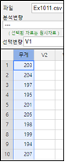
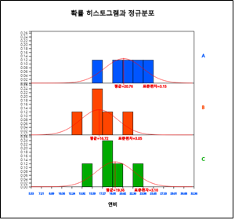

7장에서 9장까지의 가설검정은 모집단이 정규분포를 따른다는 가정을 이용하여 이론이 전개된 것이다.
하지만 현실 데이터에서는 이와 같은 가정이 만족되지 않는 경우도 있을 수 있다. 이 장에서는 특정한 형태의
분포를 따른다는 가정을 하지 않는 가설검정으로 관측값을 부호나 순위로 변환하여 검정하는 다음의 비모수적 방법을 소개한다.
- 한 모집단의 위치모수에 대한 부호검정 및 부호순위합검정
- 두 모집단의 위치모수 비교를 위한 윌콕슨 순위합검정
- 여러 모집단의 위치모수 비교를 위한 크루스칼-왈리스 검정과 프리드만 검정
10.1 한 모집단 위치모수의 검정
7장의 모평균 가설검정은 소표본의 경우 모집단이 정규분포라고 가정할 수 있는 경우에 t 분포를 이용하였다. 이와 같이
모집단의 분포에 대한 가정을 하고 표본 데이터를 이용하여 모수에 대해 검정하는 방법을 모수적 검정
(parametric test)이라 부른다. 8장의 두 모집단 모수의 가설검정과 9장의 여러 모집단 평균을 비교하는 분산분석도
모집단이 정규분포라고 가정을 하는 모수적 검정방법이다.
하지만 현실 데이터에는 모집단이 정규분포를 따른다는 가정이 맞지 않거나, 정규분포를 가정하기에는 표본의 수 등이
충분치 않을 경우가 있다. 또는 수집된 데이터가 연속형 데이터가 아니고 순위와 같은 순서식 데이터라면 모수적 검정은
적절하지 않다. 이러한 경우 모집단의 분포에 대한 가정을 하지 않고 데이터를 부호나 순위 등으로 변환하여 모수에 대한
검정을 하는 방법을 분포무관(distribution-free) 또는 비모수적 검정(nonparametric test)이라 부른다.
비모수적 검정은 데이터를 부호(sign)나 순위(rank) 등으로 변환하여 검정하기 때문에 데이터에 관한
정보의 손실이 있을 수 있다. 따라서 모집단이 정규분포를 따르는 데이터는 굳이 비모수적 검정을 적용할 이유가 없다.
하지만 데이터가 정규분포를 따르지 않는 모집단에서 추출되었다면 비모수적 방법이 더 적절한 방법이 될 것이다.
부호검정
모집단의 중앙값을 \(M\)이라 할 때 부호검정(sign test)은 이 중앙값이 특정한 값 \(M_0\)인지 아니면 이보다
크거나, 작은지, 같지 않은지 등을 검정하는 것이다. 하지만 모집단의 분포가 평균에 대해 대칭인 경우 중앙값과 평균이
같으므로 부호검정은 모평균의 검정이 된다.
부호검정의 검정통계량은 표본 데이터가 \(n\)개일 때 이 중에서 \(M_0\)보다 큰 데이터의 수 즉, + 부호 데이터의
수를 사용한다. 확률변량 \(n+\) = '+부호의 갯수'는 모수가 \(n\)과 \(p=0.5\)인 이항분포 \(B(n,0.5)\)를
따르므로 부호검정은 이항분포를 이용하여 검정한다. \(n-\) = '-부호의 갯수'도 이항분포를 따르므로 검정에 사용할 수
있다. \(B(n,0.5)_{\alpha}\)는 이항분포의 우측 100 α% 백분위수를 의미하는데 이산형 분포여서 정확한 백분위수를
구할 수 없는 경우가 많아 대략 \(B(n,0.5)_{\alpha}\) 근처의 두 수 중간값을 이용하기도 한다. 표 10.1은
부호검정가설의 형태별로 선택기준을 요약한 것이다.
표 10.1 중앙값의 부호검정
가설형태
선택기준 검정통계량 \(n_{+}\)= '+ 부호의 갯수'
1) \( \; H_0 : M = M_0 \) \(\quad\,\, H_1 : M > M_0 \)
만일 \( n_{+} > B(n, 0.5)_{α} \), \( H_0 \) 기각
2) \( \; H_0 : M = M_0 \) \(\quad\,\, H_1 : M < M_0 \)
만일 \( n_{+} < B(n, 0.5)_{1-α} \), \( H_0 \) 기각
3) \( \; H_0 : M = M_0 \) \(\quad\,\, H_1 : M \ne M_0 \)
만일 \( n_{+} < B(n, 0.5)_{1-α/2} \quad 또는 \quad n_{+} > B(n, 0.5)_{α/2} \), \( H_0 \) 기각
참고: 관측값 중에 \(M_0\)와 동일한 값이 있으면? 그 값은 검정에서 사용하지 않는다. 즉, n을 감소시킨다.
🎲 예 10.1
어느 과자제품의 겉봉지에 용량이 200g이라 표시되어 있다. 여러 소매점에서 이 과자 10개를 구입하여 무게를 조사하니 다음과 같다.
203 204 197 195 201 205 198 199 194 207
과연 표시된 용량만큼 과자가 들어있다고 할 수 있는가?
1) 모수적 방법으로 가설검정을 할 수 있는지 데이터의 히스토그램을 그려보라.
2) 부호를 이용하는 비모수적 방법으로 가설검정을 하라. 유의수준 5%.
3) 『eStatU』를 이용하여 위의 부호검정 결과를 확인하라.
풀이
1) 이 문제에 대해서는 다음과 같이 모평균(μ)에 대한 두 개의 가설을 세울 수 있다.
\(H_0 : \mu = 200 , H_1 : \mu \ne 200 \)
표본이 10개인 소표본이라 모수적 방법으로 가설을 검정하기 위해서는 모집단이 정규분포라는 가정이 필요하다. 과연 표본 데이터가 이러한 가정을 만족하는지 살펴보기 위하여 『eStat』에 [그림 10.1]과 같이 데이터를 입력한다.

[그림 10.1] 『eStat』 데이터 입력
[그림 10.2] 과자 무게의 평균-신뢰구간 그래프
모평균 가설검정 아이콘을 클릭하여 나타나는 변량선택박스에서 '분석변량'을 무게를 선택하면 평균-신뢰구간 점그래프가 나타난다([그림 10.2]). 다시 그래프 밑의 선택사항에서 '히스토그램' 버튼을 누르면 [그림 10.3]과 같은 히스토그램이 나타난다. 히스토그램을 살펴보면 데이터의 수가 작아서 모집단이 정규분포를 따른다고 가정하기에는 충분치 못하다. 이러한 경우 모수적 가설검정인 t 검정을 적용하면 오류를 범할 수 있다.
[그림 10.3] 과자 무게의 히스토그램과 정규분포
2) 이와 같은 경우 표본 데이터를 과자 용량 200g 보다 큰지(+ 표시) 아닌지(- 표시)만 조사하여 다음과 같이 부호 데이터로 변환할 수 있다.
표본 데이터
부호 데이터
203
+
204
+
197
-
195
-
201
+
205
+
198
-
199
-
194
-
207
+
만일 +의 개수와 –의 개수가 비슷하다면 대략 과자 용량 200g이 맞을 것이다. 만일 +의 개수가 더 많다면 200g보다 큰 것을 의미하고, -의 개수가 더 많다면 200g보다 작은 것을 의미하게 된다.
위의 부호 데이터는 200보다 크고 작은 것만을 조사하기 때문에 평균이라는 개념은 사용하지 않아 이 문제에
대해서는 다음과 같이 모집단 중앙값(\(M\))에 대한 두개의 가설을 설정하는 것이 좋다.
\(H_0 : M = 200 ,\;\; H_1 : M \ne 200 \)
위의 부호 데이터에서 \(n_+ \) = '+ 부호의 갯수는 n = 10, p = 0.5인 이항분포([그림 10.4])를 따른다.
[그림 10.4] n=10, p=0.5인 이항분포
따라서 \(H_0\)가 맞다면 + 부호의 개수는 5가 제일 많이 나타날 수 있고 0, 1 또는 9, 10은 나타날 확률이
매우 적다. 유의수준 5%로 귀무가설 \(H_0 : M = 200\)의 양측검정 기각역은 분포 양쪽 끝의 확률이
2.5%가 되어야 하므로 대략 다음과 같다.
만일 \(n+\)가 0 또는 1 이거나 (왼쪽 누적확률 0.011), 9 또는 10 이면 (오른쪽 누적확률 0.011) \(H_0\) 기각
이 기각역은 유의수준이 2*0.011 = 0.022 이므로 주어진 유의수준 0.05보다 작은 기각역이다. 이산형 분포인 이항분포를 이용하기 때문에 유의수준 5%와 정확하게 일치하는 기각역을 찾을 수 없는 경우가 많다. 한 값 안쪽으로 기각역을 설정하면
이 기각역은 유의수준이 2*0.055 = 0.110인 기각역이다. 그래서 경계선에 있는 값의 중간값 1.5나 8.5를 기준선으로 이용할 수도 있다.
만일 \(n+\) < 1.5 이거나 , \(n+\) > 8.5 이면 \(H_0\) 기각
이 방법도 근사적인 것이어서 이산형 분포인 경우 두 기각역 중에서 '어떤 것이 맞다'라고 할 수는 없고
분석자가 유의수준 근처에서 기준선을 선택하여야 한다. 이 예의 경우에는 어느 기각역이라도 \(n+\)가 5이므로
\(H_0\)는 기각할 수 없다. 즉, 과자 용량의 중앙값은 200g이라 할 수 있다.
3)『eStatU』에서 [그림 10.5]와 같이 데이터를 입력한 후 [실행] 버튼을 누르면 [그림 10.6]과 같은 검정결과를 보여준다. 여기서는 유의수준 5%(양측검정의 경우 2.5%)가 포함되는 값의 기준선을 표시하여 준다. 이산형 분포의 경우 최종 기각역의 선택은 분석자가 결정하여야 한다
[]
[그림 10.6] 『eStatU』를 이용한 부호검정 결과
윌콕슨 부호순위합검정
부호검정은 표본 데이터를 \(M_0\)보다 작은지 큰지를 조사하여 부호 +와 –로 변환하였다. 이 경우 원래의 표본 데이터가
가지는 정보를 많이 잃어버리게 된다. 윌콕슨 부호순위합검정(Wilcoxon signed-rank sum test)은
표본 데이터에서 \(M_0\)를 뺀 값에 대하여 순위 데이터로 변환한 후 \(M_0\)보다 큰 순위의 합과 작은 순위의 합을
비교하는 방법이다. 즉, 부호순위합검정은 표본 데이터가 \(M_0\)보다 크고 작음 뿐만 아니라 데이터의 상대적인
크기도 고려하여 검정을 실시하는 방법으로서, 한 모집단 위치모수의 검정에 가장 널리 사용되는 비모수적 검정법이다.
모집단의 중앙값을 \(M\)이라 할 때 부호순위합검정은 이 중앙값이 특정한 값 \(M_0\)인지 아니면 이보다 크거나, 작은지, 같지 않은지 등을 검정하는 것이다. 하지만 모집단의 분포가 평균에 대해 대칭인 경우 중앙값과 평균이 같으므로 부호순위합검정은 모평균의 검정이 된다. 기본적인 모형은 다음과 같다.
$$
X_i = M_0 + \epsilon_{i}, \quad i=1,2,...,n
$$
여기서 \(\epsilon_i\)는 서로 독립이며 0에 대하여 대칭인 동일한 분포를 따른다.
부호순위합검정의 검정통계량은 표본 데이터가 \(x_1 , x_2 , ... , x_n\)일 때 먼저 \(|x_i - M_0|\)의 순위를
계산한다. 이 중에서 \(M_0\)보다 큰 데이터, 즉, + 부호 데이터의 \(|x_i - M_0|\) 순위합을 사용한다.
확률변량 \(R_+\) = '+ 부호 데이터의 순위합'의 분포는 모든 경우의 수를 조사하여 구하는데 \(w_{+}(n)\)으로
표시한다. 『eStatU』를 이용하면 n = 22까지의 윌콕슨 부호순위합 \(w_{+}(n)\) 분포표를 쉽게 구할 수 있다.
\(w_{+}(n)_{\alpha}\)는 이 분포의 우측 100 α % 백분위수를 의미하는데 이산형 분포여서 정확한
백분위수를 구할 수 없는 경우가 많아 대략 \(w_{+}(n)_{\alpha}\) 근처의 두 수 중간값을 이용하기도 한다.
표 10.2는 가설의 종류별로 윌콕슨 부호순위합검정 선택기준을 요약한 것이다.
☞ 만약 관측값 중에 와 동일한 값이 있으면 그 관측값은 검정에서 사용하지 않는다. 즉, n을 감소시킨다.
🎲 예 10.2
[예 10.1]의 다음 과자 무게 데이터를 이용하여 표시된 용량만큼 과자가 들어있다고 할 수 있는지 부호순위합검정을 하라? 유의수준 5%. 『eStatU』를 이용하여 위의 부호순위합검정 결과를 확인하라
203 204 197 195 201 205 198 199 194 207
풀이
이 문제에 대한 가설은 모집단 중앙값(M)이 = 200g인지 아닌지를 검정하는 것이다.
\(H_0 : M = 200 ,\;\; H_1 : M \ne 200 \)
부호순위합 검정에서는 표본 데이터에 대하여 과자 용량 \(M_0\) = 200g 보다 큰지(+ 표시)
아닌지(- 표시)를 조사하는 부호 이외에 다음과 같이 |데이터 – 200|의 순위(rank)를 계산한다. 이때 동점값이 발생하면 평균 순위를 이용한다. 예를 들어, |데이터 – 200| 값이 제일 작은 1인 값이 2개 있으므로 이에 해당하는 순위 1, 순위 2의 평균을 낸 순위 1.5를 부여한다.
표본 데이터
203
204
197
195
201
205
198
199
194
207
부호 데이터
+
+
-
-
+
+
-
-
-
+
|데이터 – 200|
3
4
3
5
1
5
2
1
6
7
|data – 200| 순위
4.5
6
4.5
7.5
1.5
7.5
3
1.5
9
10
'+' 순위합 (\(R_{+}\))
4.5 + 6 + 1.5 + 7.5 + 10 = 29.5
전체 순위합은 1 + 2 + \(\cdots\) + 10 = \(\frac{10(10+1)}{2} \) = 55 이다. 만일 +의 부호를
갖는 데이터(과자 용량 200g 보다 큰 데이터)의 순위합 \(R+\)와 –의 부호를 갖는 데이터(과자 용량
200g 보다 작은 데이터)의 순위합 \(R-\)를 비교하여 비슷하다면(대략 28 근처) 귀무가설인
\(M\) = 200g이 맞을 것이다. 이 예에서 \(R+\) = 29.5 이고 \(R-\) = 25.5 이다.
+ 순위합이 – 순위합보다 크므로 과자 무게가 200g보다 큰 것이 우세한 것으로 보인다. 어느 정도 큰 값이
통계적으로 유의할까?
귀무가설이 맞는 경우 어느 정도 큰 값이 통계적으로 유의한지 조사하기 위해서는 확률변량
\(R+\) = '+ 순위합' (또는 \(R-\) = '– 순위합')의 분포를 알아야 한다. \(H_0\)가 사실일 경우
\(R+\)의 경우의 수는 표 10.3과 같다. 이러한 가능한 순위합을 모두 조사하여 분포표를 만들기는 쉽지 않다.
『eStatU』에는 [그림 10.7]과 같이 윌콕슨 부호순위합 분포를 보여주고 표로 정리하여 준다(표 10.4).
유의수준이 5%일 때 양측검정이므로 양쪽끝 2.5% 백분위수를 찾으면 P(X ≤ 8) = 0.0244, P(X ≥ 47) = 0.0244
이다. 이산형 분포이므로 2.5% 백분위수의 정확한 값은 없다. 그러므로 기각역은 다음과 같이 정할 수 있다.
'만일 \(R+\) ≤ 8.5 또는 \(R+\) ≥ 46.5 이면 \(H_0\) 기각'
이 문제에서는 \(R+\) = 29.5 이므로 \(H_0\)를 기각할 수 없다.
3) 『eStatU』에서 데이터를 입력한 후([그림 10.8]) [실행] 버튼을 누르면 표본통계량이 계산되고 [그림 10.9]와 같은 검정결과를 보여준다. 여기서는 유의수준 5%(양 끝의 확률이 각각 2.5%)가 포함되는 값의 기준선을 표시하여 준다. 이산형 분포의 경우 최종 기각역의 선택은 분석자가 결정하여야 한다.
[]
[그림 10.9] 『eStatU』를 이용한 부호순위합검정 결과
『eStat』으로 부호순위합검정을 실시할 수도 있다. [그림 10.10]과 같이 데이터를 입력하고 모평균 가설검정 아이콘을 클릭하여 나타나는 변량선택박스에서 '분석변량'을 무게를 선택하면 평균-신뢰구간 점그래프가 나타난다([그림 10.11]).
[그림 10.10] 『eStat』 데이터 입력
[그램 10.11] 과자 무게의 평균-신뢰구간 그래프
다시 그래프 밑의 선택사항에서 \(\mu_0\)값으로 200을 입력하고 '윌콕슨 부호순위합검정' 버튼을 누르면 [그림 10.9]와 동일한 검정결과 그래프와 결과표([그림 10.12]) 가 나타난다.
[그림 10.12] 윌콕슨 부호순위합검정 결과표
10.2 두 모집단의 위치모수 비교 검정
독립표본: 윌콕슨 순위합검정
두 모집단에서 각각 독립적으로 추출된 크기가 \(n_1\)과 \(n_1\)인 확률표본을 다음과 같이 표시하자(\(n = n_1 + n_2\) ).
여기서 \(\Delta\)는 위치모수의 차이를 의미하며 \(\epsilon_j\)는 서로 독립이며 0에 대하여 대칭인 동일한 연속형 분포를 따른다.
윌콕슨 순위합검정의 검정통계량은 혼합표본 \(X_1 , X_2, ... , X_{n_1}\),\(Y_1 , Y_2, ... , Y_{n_2}\)에 대하여
순위를 구하였을 때 \(Y_1 , Y_2, ... , Y_{n_2}\)에 대한 순위합 \(R_2\)이다. 확률변량 \(R_2\) =
'Y 표본에 부여한 순위합'의 분포는 \({}_{n}P_{n_2}\) 모든 경우의 수를 조사하여 구하는데 \(w_{2}(n_{1},n_{2})\)으로
표시한다. 『eStatU』를 이용하면 n = 25까지의 윌콕슨 순위합 분포표 \(w_{2}(n_{1},n_{2})\)를 쉽게 구할 수 있다.
\(w_{2}(n_{1},n_{2})_{\alpha}\)는 이 분포의 우측 100 α% 백분위수를 의미하는데 이산형 분포여서 정확한 백분위수를
구할 수 없는 경우가 많아 대략 \(w_{2}(n_{1},n_{2})_{\alpha}\) 근처의 두 수의 중간값을 이용하기도 한다.
표 10.5는 가설형태별로 윌콕슨 순위합검정 선택기준을 요약한 것이다.
만일 \( R_{2} < w_{2}(n_1 , n_2)_{1-α/2} \quad 또는 \quad R_{2} > w_{2}(n_1 , n_2)_{α/2} \), \( H_0 \) 기각
☞ 혼합표본에 동일한 값이 있으면 평균 순위를 사용한다.
🎲 예 10.3
한 대학의 교수가 통계학과와 경영학과 학생을 대상으로 같은 데이터과학 과목을 가르치고 있다. 두 학과 학생의 점수가 같은지 비교해 보기 위하여 통계학과와 경영학과에서 각각 7명과 6명의 학생을 임의 표본추출하여 점수를 조사하였더니 다음과 같다.
통계학과 87 75 65 95 90 81 93
경영학과 57 85 90 83 87 71
1) 『eStatU』를 이용하여 순위합검정을 하라. 유의수준 5%.
2) 『eStat』을 이용하여 위의 순위합검정 결과를 확인하라.
풀이
이 문제에 대한 가설은 두 모집단의 중앙값 \(M_1\)과 \(M_2\)가 같은지를 검정하는 것이다.
\(H_0 : M_1 = M_2\) \(H_1 : M_1 \ne M_2\)
윌콕슨 순위합검정에서는 두 표본 전체에 대하여 순위(rank)를 먼저 계산한다. 이때 동점값이 있으면 평균 순위를
이용한다. 각 표본의 순위합 \(R_1\)과 \(R_2\)를 구하기 위해서는 표 10.6과 같이 데이터를 각각 정렬한 후
전체 순위를 정하면 편리하다.
표 10.6 각 표본의 순위합을 구하기 위한 표
표본 1 정렬
표본 2 정렬
표본 1 순위
표본 2 순위
57
1
65
2
71
3
75
4
81
5
83
6
85
7
87
87
8.5
8.5
90
90
10.5
10.5
93
12
95
13
Sum of ranks
\(\small R_{1}=55\)
\(\small R_{2}=36\)
전체 순위합은 1 + 2 + \(\cdots\) + 13 = \(\frac{13(13+1)}{2}\) = 91 이고 표본 1의 순위합은
\(R_1\) = 55, 표본 2의 순위합은 \(R_2\) = 36 이다. 만일 표본의 수를 감안하였을 때 \(R_1\)과
\(R_2\)가 비슷하다면 두 모집단의 중앙값이 같다는 귀무가설이 채택될 것이다. 이 예의 경우 \(R_1\)이 \(R_2\)보다
크므로 모집단의 1의 중앙값이 커 보이는데 표본의 크기 등을 고려할 때 어느 정도 큰 값이 통계적으로 유의할까?
귀무가설이 맞는 경우 어느 정도 큰 값이 통계적으로 유의한지 조사하기 위해서는 확률변량 \(R_2\) =
'표본 2 순위합' (또는 \(R_1\) = '표본 1 순위합')의 분포를 알아야 한다. \(H_0\)가 사실일 경우
\(R_2\)의 경우의 수는 표 10.7 과 같이 \({}_{13}P_{6}\)이다. 이러한 가능한 순위합을 모두 조사하여
분포표를 만들기는 쉽지 않다. 『eStatU』에는 [그림 10.13]과 같이 윌콕슨 부호순위합 분포를 보여주고
표로 정리하여 준다.
표 10.7 n = 13일 때 \(R_2\) 경우의 수
\(R_2\)의 가능한 순위의 수 th>
\(R_{2}\) 순위합
{1,2,3,4,5,6}
21
{1,2,3,4,5,7}
22
\(\quad \cdots\)
\(\cdots\)
{8,9,10,11,12,13}
63
[그림 10.13] \(n_1\) = 7, \(n_2\) = 6 인 윌콕슨 순위합 분포
표 10.8 \(n_1\) = 7, \(n_2\) = 6 일 때 윌콕슨 순위합 분포표
윌콕슨 순위합 분포
n = 10
\(x\)
\(P(X = x)\)
\(P(X \le x)\)
\(P(X \ge x)\)
21
0.0006
0.0006
1
22
0.0006
0.0012
0.9994
23
0.0012
0.0023
0.9988
24
0.0017
0.0041
0.9977
25
0.0029
0.007
0.9959
26
0.0041
0.0111
0.993
27
0.0064
0.0175
0.9889
28
0.0082
0.0256
0.9825
29
0.0111
0.0367
0.9744
\(\cdots\)
\(\cdots\)
\(\cdots\)
\(\cdots\)
55
0.0111
0.9744
0.0367
56
0.0082
0.9825
0.0256
57
0.0064
0.9889
0.0175
58
0.0041
0.993
0.0111
59
0.0029
0.9959
0.007
60
0.0017
0.9977
0.0041
61
0.0012
0.9988
0.0023
62
0.0006
0.9994
0.0012
63
0.0006
1
0.0006
유의수준이 5%일 때 양측검정이므로 양쪽끝 2.5% 백분위수를 찾으면 P(X ≤ 28) = 0.0256,
P(X ≥ 56) = 0.0256 이다. 이산형 분포이므로 2.5% 백분위수의 정확한 값은 없다. 그러므로 기각역은 다음과
같이 정할 수 있다.
이 문제에서는 \(R_2\) = 36 이므로 \(H_0\)를 기각할 수 없다. 즉, 순위합 \(R_1\)과 \(R_2\)의 차이는 통계적으로 유의하지 않다.
1) 『eStatU』에서 데이터를 입력한 후([그림 10.14]) [실행] 버튼을 누르면 표본통계량이 계산되고 검정결과 그래프를 보여준다([그림 10.15]). 여기서는 유의수준 5%가 포함되는 값의 기준선을 표시하여 준다. 이산형 분포의 경우 최종 기각역의 선택은 분석자가 결정하여야 한다.
[]
[그림 10.15] 『eStatU』윌콕슨 순위합검정 결과 그래프
2) 『eStat』으로 순위합검정을 실시할 수도 있다. 점수와 학과를 두 열에 입력하고 두 모평균 가설검정 아이콘을 클릭하여 나타나는 변량선택박스에서 '분석변량'을 점수, 'by 그룹'을 학과로 선택하면 평균-신뢰구간 점그래프가 나타난다. 그래프 밑의 선택사항에서 [윌콕슨 순위합검정] 버튼을 누르면 검정 결과 그래프([그림 10.15]와 동일)와 검정 결과표([그림 10.16])가 나타난다.
[그림 10.16] 윌콕슨 순위합검정 결과표
대응표본: 윌콕슨 부호순위합검정
대응표본은 두 모집단에서 표본을 독립적으로 추출하기가 힘들거나, 독립적으로 추출하였을 때 각 표본개체의 특성이 너무 차이가 나서 결과분석이 무의미할 때 사용된다. 대응표본을 이용하는 검정은 두 모집단의 정규성이 만족되는 경우에 대응표본의 차이(difference) 데이터를 이용하여 8.1절과 같이 검정을 이용할 수 있다. 하지만 모집단의 정규성이 만족된다고 볼 수 없는 경우에는 차이 데이터를 이용하여 10.1절의 비모수적 검정방법인 윌콕슨 부호순위합검정(Wilcoxon signed-rank sum test)을 한다.
10.3 여러 모집단의 위치모수 비교 검정
일원분산분석: 크루스칼–왈리스 검정
\(k\)개의 모집단(한 인자의 각 수준)에서 각각 독립적으로 추출된 크기가\(n_1 , n_2 , ... , n_k\)인 확률표본을 다음과 같이 표시하자. (\(n = n_1 + n_2 + \cdots + n_k\))
표 10.13 각 수준별 확률표본에 대한 기호
수준 1
수준 2
\(\cdots\)
수준 \(k\)
\(X_{11}\)
\(X_{21}\)
\(\cdots\)
\(X_{k1}\)
\(X_{12}\)
\(X_{22}\)
\(\cdots\)
\(X_{k2}\)
\(\cdots\)
\(\cdots\)
\(\cdots\)
\(\cdots\)
\(X_{1n_{1}}\)
\(X_{2n_{2}}\)
\(\cdots\)
\(X_{kn_{k}}\)
평균 \(\small {\overline X}_{1\cdot}\)
평균 \(\small {\overline X}_{2\cdot}\)
\(\cdots\)
평균 \(\small {\overline X}_{k\cdot}\)
총평균 \(\small {\overline X}_{\cdot \cdot}\)
크루스칼–왈리스 검정의 기본 모형은 다음과 같다.
$$
X_{ij} = \mu + \tau_i + \epsilon_{ij}, \quad i=1,2,... k; j=1,2,...,n_i \; \sum_{i=1}^{k} \tau_i = 0.
$$
여기서 \(\tau_i\)는 수준 \(i\)의 효과를 의미하며 \(\epsilon_{ij}\)는 서로 독립이며 동일한 연속형 분포를 따른다.
검정의 가설은 다음과 같다.
$$
\begin{align}
H_0 &: \tau_1 = \tau_2 = \cdots = \tau_k \\
H_1 &: \text{적어도 한 쌍의 } \tau_i \text{는 같지 않다.}
\end{align}
$$
크루스칼–왈리스 검정을 위해서는 전체 혼합표본에 대한 순위 데이터를 만들어야 한다. 표 10.14는 각 수준별 순위 데이터의 기호이다.
표 10.14의 순위 데이터에 대해 9장에서 연구한 일원분산분석의 제곱합을 계산하여 보면 다음과 같다.
$$
\begin{align}\small
SST & = \sum_{i=1}^k \sum_{j=1}^{n_i} ( R_{ij} - {\overline R}_{\cdot \cdot} )^2 = \sum_{k=1}^n (k -{\overline R}_{\cdot \cdot} )^2 = n(n+1)(n-1) \\
SSTr & = \sum_{i=1}^k \sum_{j=1}^{n_i} ( {\overline R}_{i \cdot} - {\overline R}_{\cdot \cdot} )^2 \\
SSE & = SST - SSTr \\
\end{align}
$$
\(F\) 검정통계량은 다음과 같이 표시할 수 있다.
$$
F = \frac {MSTr}{MSE} = \frac { \frac{SSTr}{k-1}} {\frac{SSE}{n-k}} = \frac {\frac{SSTr}{k-1}} {\frac{SST-SSTr}{n-k}} = \frac{\frac{n-k}{k-1}} {\frac{SST}{SSTr} -1}
$$
즉, \(SST\)가 상수이므로 \(F\) 검정통계량은 \(SSTr\)에 비례하는 값이다.
크루스칼–왈리스 검정통계량 \(H\)는 \(SSTr\)에 비례하는 통계량으로 다음과 같다.
$$\small
\begin{align}
H & = \frac {12}{n(n+1)} \sum_{i=1}^{k} n_{i} ( {\overline {R}}_{i \cdot} - {\overline {R}}_{\cdot \cdot} )^{2} \\
& = \frac{12}{n(n+1)} \sum_{i=1}^{k} {R}_{i \cdot}^2 - 3(n+1) \\
\end{align}
$$
\(H\)통계량의 정의에서 상수 \( \frac{12}{n(n+1)}\)을 곱한 것은 이 통계량의 근사분포가 자유도가
\(k-1\)인 카이제곱분포가 되도록 하기 위한 것이다.
크루스칼–왈리스 검정통계량의 분포는 순위 {1, 2, ... , n}의 모든 경우의 수(n!)를 조사하여 구하는데
\(h(n_1 ,n_2 , ... , n_k )\)으로 표시한다. 『eStatU』를 이용하면 n=10까지의 크루스칼-왈리스 분포표를
쉽게 구할 수 있다. \(h(n_1 ,n_2 , ... , n_k )_{\alpha}\)는 이 분포의 우측 100 α%
백분위수를 의미하는데 이산형 분포여서 정확한 백분위수를 구할 수 없는 경우가 많아 대략
\(h(n_1 ,n_2 , ... , n_k )_{\alpha}\) 근처의 두 수의 중간값을 이용하기도 한다.
표 10.15는 크루스칼-왈리스 검정의 선택기준을 요약한 것이다.
표 10.15 크루스칼-왈리스 검정
가설
선택기준 검정통계량 \(H\)
\( \; H_0 : {\tau}_1 = {\tau}_2 = \cdots = {\tau}_k \) \( \; H_1 : \text{적어도 한 쌍의 } {\tau}_i \) 가 같지 않다.
만일 \( H > h(n_1 , n_2 , ... n_k )_{α} \), \( H_0 \) 기각.
☞ 혼합표본에 동일한 값이 있으면 평균 순위를 사용한다.
🎲 예 10.5
세 회사의 사원들을 표본 추출하여 직업만족도를 조사한 결과가 다음과 같다. 이 자료로부터 세 회사의 직업만족도가 다르다고 할 수 있는가?
회사 A 69 67 65 59
회사 B 56 63 55
회사 C 71 72 70
[Ex] ⇨ eBook ⇨ EX100301_JobSatisfaction.csv
1) 세 회사의 평균 직업만족도 비교를 모수적 방법으로 검정을 할 수 있는지 데이터의 히스토그램을 그려보라.
2) 비모수적 방법인 크루스칼–왈리스 검정을 이용하여 세 회사의 직업만족도가 다르다고 할 수 있는지 검정을 하라. 유의수준 5%.
3)『eStat』을 이용하여 위의 크루스칼–왈리스 검정 결과를 확인하라.
풀이
1) 세 모집단의 평균이 같은지 가설을 검정하는 모수적 방법은 9장에서 연구한 일원분산분석이고 모집단이
정규분포라는 가정이 필요하다. 표본이 각각 \(n_1\)=4, \(n_2\)=3, \(n_3\)=3개인 소표본이라 과연 표본
데이터가 이러한 가정을 만족하는지 살펴보기 위하여 『eStat』에 [그림 10.17]과 같이 데이터를 입력한다.
[그림 10.17] 『eStat』데이터 입력
분산분석 아이콘을 클릭하여 나타나는 변량선택박스에서 '분석변량'을 점수, 'by 그룹'을 회사로 선택하면 [그림 10.18]과
같은 각 회사별 평균-신뢰구간 점그래프가 나타난다. 회사 C의 만족도점수가 점수가 높고 회사 A, 회사 B 순이다.
하지만 이 차이가 통계적으로 유의한지는 검정하여야 한다. 다시 그래프 밑의 선택사항에서 '히스토그램' 버튼을 누르면 [그림 10.19]와 같은 각 회사별 히스토그램과 정규분포 곡선이 나타난다.
[그림 10.18] 회사별 점수의 평균-신뢰구간 그래프
[그림 10.19] 회사별 만족도 점수의 히스토그램
히스토그램을 살펴보면 데이터의 수가 작아서 모집단이 정규분포를 따른다고 가정하기에는 충분치 못하다. 이러한 경우 모수적 가설검정인
F 검정을 적용하면 오류를 범할 수 있다. 이 문제에 대한 가설은 세 모집단의 위치모수 \(M_1\), \(M_2\), \(M_3\)가 같은지를 검정하는 것이다.
\(\qquad \small H_0 : M_1 = M_2 = M_3\)
\(\qquad \small H_1 : \) 적어도 한 쌍 이상의 위치모수가 다름.
크루스칼–왈리스 검정은 세 표본 전체 혼합표본에 대하여 순위(rank)를 먼저 계산한 후 각 표본의 순위합
\(R_1\), \(R_2\), \(R_3\)를 계산한다. 이때 동점값이 있으면 평균 순위를 이용한다. 크루스칼–왈리스
검정통계량 H는 표본 데이터를 순위 데이터로 변환하여 F 검정통계량과 유사한 것을 유도한 것으로 다음과 같다.
\(\qquad \small H = \frac{12}{n(n+1)} \sum_{j=1}^{3} \frac{R_j^2}{n_j} - 3(n+1)\)
각 표본의 순위합을 구하기 위해서는 표 10.16과 같이 데이터를 각각 정렬한 후 전체 순위를 정하면 편리하다.
표 10.16 각 표본의 순위합을 구하기 위한 표
표본 1 데이터 정렬
표본 2 데이터 정렬
표본 3 데이터 정렬
표본 1 순위
표본 2 순위
표본 3 순위
55
1
56
2
59
3
63
4
65
5
67
6
69
7
70
8
71
9
72
10
순위합
\(R_{1}=21\)
\(R_{2}=7\)
\(R_{3}=27\)
전체 순위합은 1 + 2 + \(\cdots\) + 10 = \(\frac{10(10+1)}{2}\) = 55 이고 표본 1의 순위합은
\(R_1\)=21, 표본 2의 순위합은 \(R_2\)=7, 표본 3의 순위합은 \(R_3\)=27 이다. 만일 표본의 수를
감안하였을 때 \(R_1\), \(R_2\), \(R_3\)가 비슷하다면 세 모집단의 위치모수가 같다는 귀무가설이 채택될 것이다.
이 예의 경우 표본 3의 데이터 수가 작은데도 불구하고 \(R_3\)가 \(R_1\), \(R_2\) 보다 크고, 또 \(R_1\)이 \(R_2\) 보다 큰 데 표본의 크기 등을 고려할 때 세 모집단의 위치모수가 통계적으로 다른 것으로 유의할까?
귀무가설이 맞는 경우 어느 정도 큰 값이 통계적으로 유의한지 조사하기 위해서는 검정통계량 H 의 분포를 알아야 한다.
n = 10일 때 H 의 경우의 수는 10개 데이터 순위 {1,2,3, , 10}의 모든 순열인 10! = 3,628,800 이다.
이러한 가능한 순위합을 모두 조사하여 H 분포표를 만들기는 쉽지 않다. 『eStatU』에는 [그림 10.20]과 같이
\(n_1\)=4, \(n_2\)=3, \(n_3\)=3인 경우에 크루스칼–왈리스 분포를 보여주고 분포표(표 10.17)를 정리하여 준다.
그림에서 보듯이 H 분포는 비대칭 분포이다.
[그림 10.20] \(n_1\)=4, \(n_2\)=3, \(n_3\)=3인 경우의 크루스칼–왈리스 분포
표 10.17 \(n_1 = 4, n_2 = 3, n_3 = 3\)인 경우의 크루스칼–왈리스 H 분포표
크루스칼 왈리스 H 분포
\(k = 3\)
\(n_1 = 4\)
\(n_2 = 3\)
\(n_3 = 3\)
\(x\)
\(P(X = x)\)
\(P(X \le x)\)
\(P(X \ge x)\)
0.018
0.0162
0.0162
1.0000
0.045
0.0133
0.0295
0.9838
\(\cdots\)
\(\cdots\)
\(\cdots\)
\(\cdots\)
5.727
0.0048
0.9543
0.0505
5.791
0.0095
0.9638
0.0457
5.936
0.0019
0.9657
0.0362
5.982
0.0076
0.9733
0.0343
6.018
0.0019
0.9752
0.0267
6.155
0.0019
0.9771
0.0248
6.300
0.0057
0.9829
0.0229
6.564
0.0033
0.9862
0.0171
6.664
0.0010
0.9871
0.0138
6.709
0.0029
0.9900
0.0129
6.745
0.0038
0.9938
0.0100
7.000
0.0019
0.9957
0.0062
7.318
0.0019
0.9976
0.0043
7.436
0.0010
0.9986
0.0024
8.018
0.0014
1.0000
0.0014
H 검정은 우측검정이다. 유의수준이 5%일 때 오른쪽 5% 백분위수를 찾으면 P(X ≥ 5.727) = 0.0505 이다.
이산형 분포이므로 5% 백분위수의 정확한 값은 없다. 그러므로 기각역은 다음과 같이 정할 수 있다.
'만일 H > 5.727이면 \(H_0\) 기각'
이 문제에서는 H = 7.318 이므로 \(H_0\)를 기각한다.
3) 『eStatU』에서 데이터를 입력한 후([그림 10.21]) [실행] 버튼을 누르면 표본통계량이 계산되고 [그림 10.22]와 같은 검정결과를 보여준다. 여기서는 유의수준 5%가 포함되는 값의 기준선을 표시하여 준다. 이산형 분포의 경우 최종 기각역의 선택은 분석자가 결정하여야 한다.
[]
[그림 10.22] 『eStatU』를 이용한 크루스칼–왈리스 검정 결과
『eStat』으로 크루스칼–왈리스 H 검정을 실시할 수도 있다. [그림 10.17]과 같이 데이터를 입력하고 분산분석 아이콘을 클릭하여 나타나는 변량선택박스에서 '분석변량'을 점수, 'by 그룹'을 회사로 선택하면 [그림 10.18]의 평균-신뢰구간 점그래프가 나타난다. 그래프 밑의 선택사항에서 '크루스칼–왈리스 검정' 버튼을 누르면 [그림 10.22]와 동일한 검정결과 그래프와 검정결과표([그림 10.23])가 나타난다.
[그림 10.23] 크루스칼–왈리스 검정 결과표
이원분산분석: 프리드만 검정
9.2절에서 세 종류의 자동차 연비 측정에서는 운전자라는 블록 요인의 영향을 줄이기 위해 확률화블록계획법
(randomized block design)으로 실험하는 방법을 연구하였다. 그리고 모집단이 정규분포를 따른다고 가정하고
측정된 데이터는 이원분산분석에 의한 F검정을 실시하였다. 하지만 현실 데이터에는 모집단이 정규분포를 따른다는 가정이
맞지 않거나, 정규분포를 가정하기에는 데이터 수 등이 충분치 않을 경우가 있다. 또는 수집된 데이터가 연속형 데이터가
아니고 순위와 같은 순서식 데이터라면 모수적 검정은 적절하지 않다. 이러한 경우 모집단의 분포에 대한 가정을 하지 않고
데이터를 순위 등으로 변환하여 모수에 대한 검정을 하는 비모수적 검정이 사용된다. 이 절에서는 9.2절의 확률화블록계획법
실험에 해당하는 프리드만 검정(Friedman test)을 소개한다.
k개의 수준에 블록이 n개인 데이터의 순위를 다음과 같이 표시하자.
표 10.18 확률화블록계획법의 각 수준별 확률표본에 대한 기호
수준 1
수준 2
\(\cdots\)
수준 \(k\)
블록 1
\(X_{11}\)
\(X_{21}\)
\(\cdots\)
\(X_{k1}\)
블록 2
\(X_{12}\)
\(X_{22}\)
\(\cdots\)
\(X_{k2}\)
\(\cdots\)
\(\cdots\)
\(\cdots\)
\(\cdots\)
\(\cdots\)
블록 n
\(X_{1n}\)
\(X_{2n}\)
\(\cdots\)
\(X_{kn}\)
평균
평균 \(\small {\overline X}_{1\cdot}\)
평균 \(\small {\overline X}_{2\cdot}\)
\(\cdots\)
평균 \(\small {\overline X}_{k\cdot}\)
전체평균 \(\small {\overline X}_{\cdot \cdot}\)
프리드만 검정의 기본 모형은 다음과 같다.
$$
X_{ij} = \mu + \tau_{i} + \beta_{j} + \epsilon_{ij}, \quad i=1,2,...,k; \;\; j=1,2,...,n
$$
여기서 \(\tau_i\)는 수준 \(i\)의 효과를 의미하며, \(\beta_{j}\)는 블록효과, \(\epsilon_{ij}\)는 서로
독립이며 동일한 연속형 분포를 따른다. 단, \(\sum_{i=1}^{k} \tau_{i} = 0\), \(\sum_{j=1}^{n} \beta_{j} = 0\).
검정의 가설은 다음과 같다.
$$
\begin{align}
H_0 &: \tau_1 = \tau_2 = \cdots = \tau_k \\
H_1 &: \text{한 쌍 이상의 } \tau_i \text{가 같지 않다.}
\end{align}
$$
프리드만 검정을 위해서는 각 블록별 순위 데이터를 만들어야 한다. 표 10.19는 각 블록별 순위 데이터의 기호이다.
표 10.19의 순위 데이터에 대해 9.2절에서 연구한 분산분석에서 관측값 대신에 블록별 순위를 적용해 제곱합을 계산하여 보면
총제곱합 SST와 블록제곱합 SSB는 상수가 된다. 처리제곱합은 다음과 같다.
$$\small
\begin{align}
SSTr &= \sum_{i=1}^{k} n( {\overline R}_{i \cdot} - {\overline R}_{\cdot \cdot} )^2 \\
SST &= SSTr + SSE
\end{align}
$$
그러므로 \(F\)검정통계량은 다음과 같이 표시할 수 있다.
$$
F = \frac{MSTr}{MSE} = c \frac{ {SSTr } } { {SST - SSTr - SSE } }
$$
여기서 \(c\)는 상수. 즉, \(SST\)가 상수이므로 F 검정통계량은 \(SSTr\)에 비례하는 값이다.
프리드만 검정통계량 \(S\)는 \(SSTr\)에 비례하는 통계량으로 다음과 같다.
$$\small
\begin{align}
S &= \frac{12}{k(k+1)} SSTr = \frac{12 n}{k(k+1)} \sum_{i=1}^{k} ({\overline R}_{i \cdot} - {\overline R}_{\cdot \cdot} )^2 \\
&= \frac{12}{nk(k+1)} \sum_{i=1}^{k} {R}_{i \cdot} ^2 - 3n(k+1)
\end{align}
$$
\(S\)통계량의 정의에서 \(SSTr\)에 상수 \(\frac{12}{k(k+1)}\)을 곱한 것은 이 통계량의 근사분포가 자유도가
\(k-1\) 인 카이제곱분포가 되도록 하기 위한 것이다.
프리드만 검정통계량의 분포는 \(S(k,n)\)으로 표시한다. 『eStatU』를 이용하면 k=3일때 n=8까지,
k=4일 때 n= 6까지의 프리드만 분포표 \(S(k,n)\)를 쉽게 구할 수 있다. \(S(k,n)_{\alpha}\)는 이 분포의
우측 100 α % 백분위수를 의미하는데 이산형 분포여서 정확한 백분위수를 구할 수 없는 경우가 많아 대략
\(S(k,n)_{\alpha}\) 근처의 두 수의 중간값을 이용하기도 한다. 표 10.20은 프리드만 검정의 선택기준을 요약한 것이다.
표 10.20 프리드만 검정
가설
선택기준 검정통계량 \(S\)
\( \; H_0 : {\tau}_1 = {\tau}_2 = \cdots = {\tau}_k \)
\(\; H_1 : \text{적어도 한 쌍이상의 } {\tau}_i \) 가 같지 않다.
만일 \( S > s(k, n)_{α} \), \( H_0 \) 기각
☞ 블록에 동일한 값이 있으면 평균 순위를 사용한다
🎲 예 10.6
9.2절의 세 종류의 자동차(A, B, C)의 연비를 확률화블록계획법으로 다섯 명의 운전자가 측정한 연비 데이터를 여기서 다시 정리해 놓았다.
표 10.21 세 회사 자동차의 연비
블록
자동차 A
자동차 B
자동차 C
운전자 1
22.4
16.3
20.2
운전자 2
16.1
12.6
15.2
운전자 3
19.7
15.9
18.7
운전자 4
21.1
17.8
18.9
운전자 5
24.5
21.0
23.8
[Ex] ⇨ eBook ⇨ EX090201_GasMileage.csv
1) 세 자동차의 연비를 모수적 방법으로 검정을 할 수 있는지 데이터의 히스토그램을 그려보라.
2) 확률화블록계획법의 비모수적 방법인 프리드만 검정을 이용하여 세 자동차의 연비가 다르다고 할 수 있는지 검정을 하라. 유의수준 5%.
3) 『eStatU』를 이용하여 위의 프리드만 검정 결과를 확인하라.
풀이
1) 『eStat』에 [그림 10.24]와 같이 데이터를 입력한다.
[그림 10.24] 『eStat』 데이터 입력
분산분석 아이콘을 클릭하여 나타나는 변량선택박스에서 '분석변량'을 연비, 'by 그룹'을 자동차로 선택하면 각 자동차별 평균-신뢰구간 점그래프가 나타난다. 다시 그래프 밑의 선택사항에서 '히스토그램' 버튼을 누르면 [그림 10.25]와 같은 각 자동차 종류별 히스토그램과 정규분포 곡선이 나타난다..

[그림 10.25] 회사별 만족도 점수의 히스토그램
히스토그램을 살펴보면 데이터의 수가 작아서 모집단이 정규분포를 따른다고 가정하기에는 충분치 못하다. 이러한 경우
모수적 가설검정인 검정을 적용하면 오류를 범할 수 있다. 이 문제에 대한 가설은 세 모집단의 위치모수
\(M_1\), \(M_2\), \(M_3\)가 같은지를 검정하는 것이다.
\(\qquad \small H_0 : M_1 = M_2 = M_3\)
\(\qquad \small H_1 : \) 적어도 한 쌍 이상의 위치모수가 다름.
프리드만 검정은 세 종류의 자동차에 대해 각각의 운전자(블록)별로 측정한 연비에 대해 순위를 계산한 후(표 10.22)
각 자동차별로 순위합 \(R_1\), \(R_2\), \(R_3\)를 계산한다. 이때 동점값이 있으면 평균 순위를 이용한다.
프리드만 검정통계량 S 는 이원분산분석의 F 검정에서 이러한 순위 데이터를 사용한 것으로 볼 수 있다.
자동차 A(표본 1)의 순위합은 \(R_1\)=15, 자동차 B(표본 2)의 순위합은 \(R_2\)=5, 자동차 C(표본 3)의 순위합은
\(R_3\) =10 이다. \(R_1\), \(R_2\), \(R_3\)가 차이가 나는데 세 모집단의 위치모수가 통계적으로 다른 것으로
유의할까?
귀무가설이 맞는 경우 어느 정도 큰 값이 통계적으로 유의한지 조사하기 위해서는 검정통계량 S의 분포를 알아야 한다.
n=5, k=3일 때 순위의 경우의 수는 \((3!)^5 = 7776\)이다. 이러한 가능한 순위합을 모두 조사하여 S 분포표를
만들기는 쉽지 않다. 『eStatU』에는 [그림 10.26]과 같이 n=5, k=3인 경우에 프리드만 S 분포를 보여주고 분포표
(표 10.23)를 정리하여 준다. 그림에서 보듯이 S 분포는 비대칭 분포이다.
[그림 10.26] m=5, k=3인 경우의 프리드만 S 분포
표 10.23 n=5, k=3인 경우에 프리드만 S 분포표
프리드만 S 분포
\(k = 3\)
\(n = 5\)
\(x\)
\(P(X = x)\)
\(P(X \le x)\)
\(P(X \ge x)\)
0.000
0.0463
0.0463
1.0000
0.400
0.2623
0.3086
0.9537
1.200
0.1698
0.4784
0.6914
1.600
0.1543
0.6327
0.5216
2.800
0.1852
0.8179
0.3673
3.600
0.0579
0.8758
0.1821
4.800
0.0309
0.9066
0.1242
5.200
0.0540
0.9606
0.0934
6.400
0.0154
0.9761
0.0394
7.600
0.0154
0.9915
0.0239
8.400
0.0077
0.9992
0.0085
10.000
0.0008
1.0000
0.0008
S 검정은 우측검정이다. 유의수준이 5%일 때 오른쪽 5% 백분위수를 찾으면 P(X ≥ 6.4) = 0.0394 이다. 이산형 분포이므로 5% 백분위수의 정확한 값은 없다. 그러므로 기각역은 다음과 같이 정할 수 있다.
'만일 S ≥ 6.4 이면 \(H_0\) 기각'
이 문제에서는 S = 10 이므로 를 기각한다.
3) 『eStatU』에서 데이터를 입력한 후([그림 10.27]) '실행' 버튼을 누르면 표본통계량이 나타나고 [그림 10.28]과 같은 검정결과를 보여준다. 여기서는 유의수준 5%가 포함되는 값의 기준선을 표시하여 준다. 이산형 분포의 경우 최종 기각역의 선택은 분석자가 결정하여야 한다.